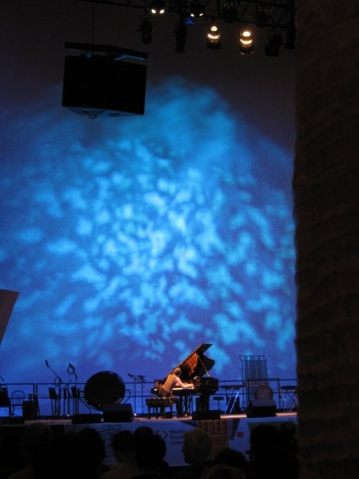

Madelyn Byrne Piano Sonata, Dorothy Chang Five,
Emily Doolittle Gliese 581c and select pieces from Minute Etudes,
Kala Pierson Motion Blur
$25 General Admission / $20 Athnaeum Members, seniors / $5 Students
April 26, 2018, 4:00pm
Talk
Palomar College Howard Brubeck Theatre (1140 West Mission Road), San Marcos, CA
April 26, 2018, 12:30pm
Solo Recital, Connections
Palomar College Howard Brubeck Theatre (1140 West Mission Road), San Marcos, CA
Madelyn Byrne Piano Sonata and Northern Flight,
Dorothy Chang Five,
Emily Doolittle Gliese 581c and select pieces from Minute Etudes,
Kala Pierson Motion Blur
April 25, 2018, 7:30pm
Solo Recital, Connections
California State University Music Hall (5151 State University Dr), Los Angeles, CA
Madelyn Byrne
Piano Sonata*,
Dorothy Chang
Five,
Emily Doolittle
Gliese 581c and select pieces from
Minute Etudes,
Kala Pierson
Motion Blur*Lecture Recital, Connections
Soka University Performing Arts Center, Aliso Viejo, CA
Madelyn Byrne Piano Sonata,
Dorothy Chang Five,
Emily Doolittle Gliese 581c and select pieces from Minute Etudes,
Kala Pierson Flare and Spark

Performing in Bang on a Can Marathon